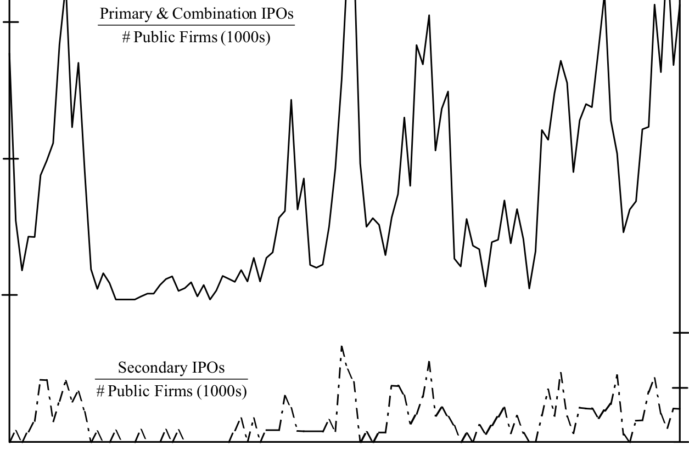
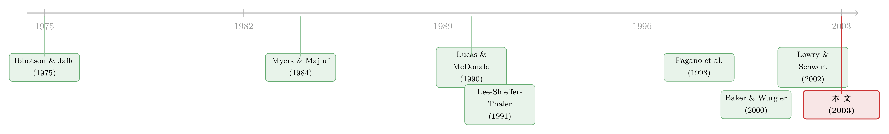

新股的潮汐：为什么有的年份挤破头上市，有的年份门可罗雀？
本文读的是 Lowry (2003, Journal of Financial Economics)：把 IPO 数量随时间的剧烈起伏，同时放进「资本需求」「信息不对称」「投资者情绪」三把尺子下做横向比较。结论是——真正撑起这条潮汐曲线的，是 企业的资本需求 和 投资者的乐观情绪；逆向选择虽然在统计上显著，但经济意义上几乎可以忽略。
1 引言：一条比资本开支「野」得多的曲线
先看一个让人有点错愕的数字。
在 1973 到 1979 这七年里，全美国只有 329 家公司上市。而紧挨着它的前七年（1966–1972），这个数字是 2,644；紧挨着它的后七年（1980–1986），又跳到了 3,805。同样是七年，差了将近一个数量级。整个 1960–1996 这 37 年间，一共有 12,821 家公司走上了 IPO 这条路，但它们绝不是均匀地铺在时间轴上的——而是一阵一阵地涌来，像潮水。
问题来了：为什么会这样？
一个最朴素的回答是「跟着经济周期走」——经济好的时候大家都缺钱、都想扩张，于是都来上市。这听上去很顺，但 Lowry 在文章开头就敲了一记警钟：IPO 数量的波动，远远超过了企业资本开支（capital expenditures）的波动。换句话说，如果上市只是为了「找钱去投资」，那它的起伏不该比投资本身还剧烈这么多。一定有「找钱」之外的力量，在拨动这条曲线。
这就是全文要追的那一个核心问题：这条潮汐，到底是被什么推动的？ 而且，它的起伏，到底符不符合一个「有效市场」该有的样子？
（关于「上市时机」本身就是一种被反复研究的决策，可参见《上市不是终点，是一份你随时可以「赎回」的期权》与《新股的「冷热」，其实是投行在替你算的一笔账》。）
2 三把尺子：同一条曲线，三种读法
要回答「被什么推动」，Lowry 没有先入为主地押一个答案，而是把文献里散落的三种解释，整整齐齐地摆成三个互不排斥的假说，逐一上称。
第一把尺子：资本需求假说（capital demands hypothesis）。 它说得很直白——IPO 数量的波动，源于私人企业总体资本需求的变化。经济前景好、预期增长高的时候，企业普遍缺钱，于是更多公司去找融资；而在「银行贷款、公开债、风险投资、公开股权」这几条路里，当公开股权能带来最大净收益时，企业就选择 IPO。注意，这把尺子默认市场是半强式有效（semi-strong form efficient）的：发行成本永远为正，公司只在有正净现值（NPV）项目时才上市。Choe、Masulis、Nanda (1993) 发现经济条件更好时增发（SEO）也更多，正是这条逻辑的旁证。
第二把尺子：信息不对称假说（information asymmetry hypothesis）。 它盯的是逆向选择成本（adverse-selection costs）。经理人比市场更了解公司真实价值，又有动机在公司被高估时发股，于是市场一听到「要发股」就压低估值。Myers (1977)、Myers and Majluf (1984)、Korajczyk et al. (1992) 都指出，这种逆向选择成本会把许多手握正 NPV 项目的公司挡在股权融资门外。当信息不对称特别严重时，公司宁可改用别的融资方式、把 IPO 往后拖——于是 IPO 数量与信息不对称程度负相关。这把尺子同样假设市场半强式有效。
第三把尺子：投资者情绪假说（investor sentiment hypothesis）。 这把尺子最「离经叛道」，因为它直接假设市场无效。某些时期，投资者过度乐观，愿意为公司付出超过其真实价值的价钱——这时上市成本特别低，于是大批公司争相上市；反之，情绪低迷时投资者低估公司，IPO 数量随之萎缩。Lee、Shleifer、Thaler (1991) 与 Rajan and Servaes (1997, 2003) 都把 IPO 潮归因于情绪。文章里还引了《华尔街日报》两句很传神的话：「现在 IPO 市场的规矩似乎是：不管什么价，先买了再说」（1996），以及「投资者一转熊，你就上不了市；可他们一转牛，几乎是个公司都能上」（1999）。
这三把尺子在两个维度上分道扬镳：一是对市场效率的假设（前两者认为有效，情绪假说认为无效）；二是它们盯的是「需求」还是「供给」——资本需求假说看的是发行方对股权的需求，而信息不对称与情绪假说看的都是市场这一侧对新股的接纳度（供给侧的吞吐能力）。
接着，一个自然的问题是：这三股力量很可能同时在起作用，谁也没法事先排除谁。那要怎么把它们分开称量？
3 数据，与一个先得跨过去的坎
Lowry 的样本横跨 1960–1996，37 年。IPO 数量来自 Jay Ritter 的数据库；做细颗粒度分析时则用 SDC（Securities Data Company）数据库，里面有 1970–1996 的 9,163 笔承销型 IPO。剔除掉封闭式基金、ADR、REIT、单位证券（units）、由互助制转股份制的转换、发行价低于 $5 的、以及二级股份占比超过 75% 的，最后留下 5,349 笔 IPO。这些公司一共募了 $196 亿（1990 年美元），单笔平均募资 $36.6 百万（中位数 $18.3 百万），平均发行价 $12.06（中位数 $11.50）。两套数据（数量与募资额）季度序列的相关系数高达 0.90，互为印证。
但在做任何回归之前，有一个坎必须先跨过去：IPO 数量是高度持续、甚至非平稳的。
季度 IPO 数量 1960–1996 的一阶自相关系数高达 0.87，增广 Dickey-Fuller 检验（Dickey and Fuller, 1979）也给出了非平稳的证据。直觉上也说得通：如果上市数量与技术进步挂钩，而技术进步是一连串随机冲击的累积（一个随机游走的时间加总，按 Schwert (1987) 的说法本身就是非平稳的），那 IPO 数量就没有「向某个正常水平回归」的倾向。这件事不处理，回归就会撞上 Granger and Newbold (1974) 那种虚假回归（spurious regression）的陷阱。
Lowry 的处理是：用当期 IPO 数量除以上一期末的公开公司总数作为被解释变量。这一步一举两得——既消掉了非平稳性，又（在行业层面）自动控制了行业规模差异。这里还藏着一个细节：CRSP 在 1963 和 1972 年因为纳入 Amex 和 Nasdaq，公开公司家数出现了离散跳升。为了不被这两个跳点污染，她用 1972 年 12 月之后的实际家数，再用 1972–1996 间每年 0.45% 的复合增长率，往前倒推 1972 年 12 月（当时有 5,690 家 CRSP 公司）之前的家数。最后，每个季度回归都加了一个第一季度虚拟变量（华尔街年底放假，Q1 上市明显偏少），并加上一个自回归项来吸收残差的序列相关。
把这些拼起来，回归的骨架大致是这样：
$$ \frac{\text{IPO}_t}{N_{t-1}} = \alpha + \rho\,\frac{\text{IPO}_{t-1}}{N_{t-2}} + \sum_k \beta_k\, X_{k,t} + \gamma\, Q1_t + \varepsilon_t $$
其中 \(N_{t-1}\) 是上一期末的公开公司家数，\(X_{k,t}\) 是三类假说各自的代理变量，\(Q1_t\) 是第一季度虚拟变量，\(\rho\) 这一项吸收持续性。看起来平平无奇，但正是「除以 \(N_{t-1}\)」这一步，让后面的系数能被干净地解读。
4 识别策略：先用代理变量，再用一个「不靠代理」的检验
问题的难点在于：三个假说背后的那些「力量」——资本需求、信息不对称、投资者情绪——没有一个是能直接观测的。所以 Lowry 的策略分两步走。
第一步，为每股力量造一组代理变量（proxies），一起放进回归里赛跑。
- 资本需求：实际 GDP 增长率、实际私人非住宅固定投资增长率、新注册公司数量的变化、公开公司的平均实际销售增长、以及一个 NBER 经济扩张虚拟变量。（顺带一提，Mikkelson et al. (1997) 翻招股书发现，
85%的公司说上市是为了补充营运资本，64%是为了新投资——资本需求这条线确有微观基础。） - 信息不对称：盈余公告前后异常收益的离散度、以及 IBES 上分析师预测的离散度。离散度越大，意味着市场对公司真实价值越没把握，逆向选择成本越高。
- 投资者情绪：未来实际市场收益（等权指数，作为「当下是否被高估」的反向指标——若现在情绪过热，未来收益就低）、以及封闭式基金折价（closed-end fund discount）这一经典情绪温度计（Lee, Shleifer, Thaler, 1991）。此外还有市场 MB 比率、市场收益、以及一个「高 MB 时期 × 市场收益」的交互项。
从描述统计里就能感受到这些变量的「体温」：季度封闭式基金折价均值约 11.4%，市场 MB 比率均值约 2.70，新股首日初始收益（initial returns）均值约 14.8%，未来等权市场收益均值约 10.3%。
但真正关键的一步，是第二步——一个不依赖任何代理变量的检验。
代理变量再精巧，也总有人质疑「你这把尺子量的到底是不是情绪」。于是 Lowry 设计了一个绕开代理的事后检验，逻辑极其干净：如果 IPO 数量真的受情绪推动，那么在高情绪、高发行量的时期上市的公司，事后的回报应该最低——因为那正是投资者「付得最多、买得最贵」的时候。于是只要看 IPO 数量与事后股票回报的关系就行了。这一招的妙处在于，它把「情绪是否在定价中起作用」翻译成了一个可证伪的回报预测问题。
5 主要结果：两个赢家，一个「统计显著但无足轻重」的配角
把三组代理变量一起扔进总量时间序列回归后，结果相当清晰。
如表 3 所示，三个因子都对 IPO 数量的波动有贡献，但分量天差地别：资本需求与投资者情绪无论在统计意义还是经济意义上都最为重要；信息不对称（逆向选择）虽然在统计上显著，可它的经济效应却很小。换到行业层面重做一遍，结论几乎照搬——资本需求和情绪依旧是最稳健的两个，逆向选择仍是个边缘角色。

Table 3: that investor sentiment and possibly information asymmetry significantly
而那个「不靠代理」的事后检验，给出了全文最有说服力的一击：
- IPO 数量与新股的原始事后回报（raw post-issue returns），以及与事后市场回报（post-issue market returns），都呈显著负相关。也就是说，公司似乎特别善于在「一大类公司、甚至整个市场」被估得格外高的时候扎堆上市。
- 但有意思的是，IPO 数量与新股的异常回报（abnormal returns，即基准调整后的回报）之间，并没有显著关系。
这两条放在一起，指向一个微妙的结论：驱动 IPO 潮的「乐观」，更像是对整个市场（而非对某些特定新股）的高估。公司不是在自己被单独高估时才上市，而是在「水位整体抬高」时顺势出海。这与 Pagano、Panetta、Zingales (1998) 在意大利市场上的发现遥相呼应——他们也认为公司扎堆上市，是在借全行业的高估，而非为未来增长融资。
于是反转出现了：在 Lowry 之前，关于 IPO 波动的文献几乎只盯着「投资者情绪」这一个解释。而本文用 37 年的美国数据系统地一较高下后说：情绪确实重要，但它远不是唯一的主角——企业实打实的资本需求，分量同样重。 把「找钱」和「赶情绪」这两股力量同时摆上台面、并各自称出体重，这正是本文最朴素也最扎实的贡献。
（关于「卖得贵的新股如何带火一整波」的情绪—信息机制，可参见《「卖得贵」的新股，为什么能带火一整波》；关于新股到底是折价还是溢价，可参见《新股到底是「打折」卖，还是「溢价」卖？》。）
6 文献脉络
这条研究的源头，是一群人最早注意到「热销市场（hot issue market）」这件怪事：Ibbotson and Jaffe (1975) 与 Ibbotson、Sindelar、Ritter (1988, 1994) 描绘了 IPO 数量的巨幅起伏，Ritter (1984) 专门解剖了 1980 年那一波热潮——但他们大多停在「描述现象」，没去深挖背后的成因。
接着，两条解释支流分别长了出来。一条是信息/有效市场的支流：Myers (1977)、Myers and Majluf (1984) 奠定了逆向选择的逻辑，Lucas and McDonald (1990) 进一步预言了信息不对称会导致增发的「扎堆」，Choe、Masulis、Nanda (1993) 和 Bayless and Chaplinsky (1996) 则在 SEO 上找到了「机会之窗」的证据。另一条是情绪/无效市场的支流：Lee、Shleifer、Thaler (1991) 用封闭式基金折价量化情绪，Rajan and Servaes (1997, 2003)、Pagano et al. (1998)、以及 Baker and Wurgler (2000) 都把发行潮与市场的非理性挂钩。

到了 Lowry (2003)，她做的事情是把这两条支流——再加上一条最「无趣」却最容易被忽视的「资本需求」主线——拉到同一张回归表里对质。它的位置，正好坐在「有效市场 vs 无效市场」这场争论的交叉口上。与之并肩的还有 Lowry and Schwert (2002) 对 IPO 周期是「泡沫还是序贯学习」的追问，以及 Lerner、Shane、Tsai (2003) 关于「股权融资周期是否要紧」的证据。
7 评论与延伸（Q&A + 研究方向）
(a) 几个可能的疑问
Q：「资本需求假说」和「投资者情绪假说」在数据上真能分得开吗？经济好的时候，难道不是既缺钱、又乐观？
这正是本文最难、也最值得称道的地方。两者确实高度共线，但识别它们的钥匙是那个事后回报检验：资本需求假说默认市场有效，因此它不预测「高发行量之后回报会系统性偏低」；而情绪假说恰恰预测这一点。数据里 IPO 数量与事后市场回报显著负相关，说明情绪那一块确实存在、不能被纯资本需求解释掉。反过来，回归里资本需求代理变量在控制了情绪后仍显著，说明它也不是情绪的影子。
Q：逆向选择只是「统计显著、经济上无足轻重」，会不会是代理变量太差，把它的真实作用埋掉了？
这是个诚实的担忧，作者自己也承认。盈余公告异常收益离散度、分析师预测离散度，都是已上市公司层面的信息不对称，未必能很好地代表待上市私人公司的逆向选择成本——而后者恰恰是假说真正指向的对象。所以「经济效应小」更稳妥的读法是：在现有可得代理变量下逆向选择不重要，而非它在理论上不重要。
Q：为什么要大费周章地除以「上一期末的公开公司家数」，直接用 IPO 数量的一阶差分不行吗？
在总量回归里，两种做法都能消掉非平稳性，确实都可行。但「除以家数」在行业层面多了一个关键好处：自动控制了行业规模差异。表 1 显示这件事非同小可——1980 年代医疗行业 IPO 数量按「占期初公开公司家数的比例」算高达
123%，而制造业只有28%；可按绝对数量，制造业（555家）反而多过医疗（379家）。为了全文统一口径，她干脆在总量层面也用了这个定义。
Q：用「未来市场回报」当情绪的代理，会不会有点循环论证——你不就是在用回报预测回报吗？
不完全是。这里的逻辑链是：情绪 → 当下高估 → IPO 扎堆，同时高估意味着未来回报偏低。所以「未来回报」是「当下被高估程度」的一个反向观测，用它来解释当下的发行量，并不是在用未来预测过去。当然，这条链依赖「高估终会回归」的假设，这也是为什么作者还另外做了那个独立的事后回报检验来交叉验证。
Q：样本停在 1996 年，错过了 1999–2000 的互联网泡沫，这会不会让「情绪」的作用被低估？
很可能。停在 1996 是为了给每笔 IPO 留出三年的事后回报窗口，这是合理的设计取舍。但代价是错过了史上情绪最极端的那一段。若把样本延到 2000 年前后，情绪的经济分量大概率会更突出。（关于那一波到底是「进得太多」还是「进得太少」，可参见《互联网泡沫，错不在「进得太多」，而在「进得太少」？》。）
Q：行业层面的结论和总量层面几乎一样，那做行业分析的意义在哪？
意义在于「排除一种可能性」。作者一开始担心：逆向选择的重要性也许在总量加总时被冲淡了，或者某个因子其实只在行业层面才起作用。行业回归的结论与总量一致，恰恰说明这种「加总掩盖」的担忧不成立——三个因子的相对重要性是稳健的，而非加总的假象。
(b) 几个可能的研究问题与提案
1. 把这套「三力量赛跑」框架搬到公司债发行潮上。 【经济故事】公司债的发行同样一阵一阵：有时市场抢着买高收益债，有时一级市场冷清。到底是企业资本需求、信用市场的逆向选择、还是固定收益投资者的「risk-on 情绪」在主导？这与股权市场未必同构。 【可行性】高。Mergent FISD + TRACE 可以构造季度发行量，宏观代理变量现成，情绪可用信用利差、基金资金流来量。识别上可复刻 Lowry 的「事后回报检验」：高发行量时期发的债，事后超额回报是否更低？
2. 外资持有人是不是 IPO 潮的一股独立「情绪」？ 【经济故事】Lowry 的情绪是本土投资者的乐观。但在跨境资本流动活跃的市场，外资的进出本身可能就是一台情绪放大器——外资涌入推高估值，企业顺势上市。 【可行性】中。需要按国家—季度匹配外资组合流入数据（如 TIC、EPFR）与 IPO 发行量；识别难点在于外资流入与本土情绪共线，可借新兴市场「可投资度（investability）」的外生变动做工具。
3. 把封闭式基金折价换成更现代的情绪指标，重估各因子分量。 【经济故事】Lowry 时代的情绪温度计偏「老」。若用 Baker-Wurgler 情绪指数、IPO 首日回报、散户资金流、甚至文本情绪重做，资本需求与情绪的相对体重会不会重新洗牌？ 【可行性】高。数据皆可得，方法是直接扩展本文回归，纯属「换尺子重称」，doable。
4. 区分「市场层面高估」与「公司层面高估」对上市决策的不同作用。 【经济故事】本文的反差暗示：推动 IPO 潮的是市场整体高估，而非单个公司被高估。能否用同行可比公司估值、行业 MB，把这两层高估分离开，看哪一层才真正触发上市？ 【可行性】中。需要为每家拟上市公司构造「行业可比高估」与「自身高估」的分解，识别上要处理「公司选择何时披露财务」的内生性。
评论与延伸：我的判断
贡献。 这篇文章的价值不在于某个炫目的识别技巧，而在于它的克制与全面：在一个被「情绪叙事」垄断的话题上，它没有急着站队，而是把三种解释一起摆上称，并诚实地报告「情绪重要，但资本需求同样重要，逆向选择则几乎可以忽略」。那个绕开代理变量的事后回报检验，是全文最漂亮的一笔——它把一个关于「成因」的争论，转化成了一个可证伪的回报预测。
对识别的担忧。 我最在意两点。其一，逆向选择的代理变量名不副实——用已上市公司的盈余/分析师离散度去代表待上市私人公司的逆向选择成本，这中间的距离太大，「经济效应小」这个结论我只敢有限度地相信。其二，资本需求与情绪的共线性始终是悬在头顶的剑；虽然事后回报检验缓解了它，但两者在回归里的相对系数大小，仍可能对代理变量的具体选择敏感。
后续想看到什么。 我最想看到把样本延伸过 1999–2000 的泡沫，再做一次同样的赛跑——我打赌情绪的经济分量会明显抬升，而这恰好能检验本文结论的「样本依赖性」。另外，把这套框架平移到公司债与外资持有人维度，可能比在股权市场里再加一个情绪代理更有增量。
参考文献
- Baker, M., Wurgler, J. (2000). The equity share in new issues and aggregate stock returns. Journal of Finance 55, 2219–2257.
- Bayless, M., Chaplinsky, S. (1996). Is there a window of opportunity for seasoned equity issuance? Journal of Finance 51, 253–278.
- Choe, H., Masulis, R., Nanda, V. (1993). Common stock offerings across the business cycle. Journal of Empirical Finance 1, 1–29.
- Dickey, D., Fuller, W. (1979). Distribution of the estimators for autoregressive time series with a unit root. Journal of the American Statistical Association 74, 427–431.
- Granger, C., Newbold, P. (1974). Spurious regressions in econometrics. Journal of Econometrics 2, 111–120.
- Ibbotson, R., Jaffe, J. (1975). 'Hot issue' markets. Journal of Finance 30, 1027–1042.
- Lee, C., Shleifer, A., Thaler, R. (1991). Investor sentiment and the closed-end puzzle. Journal of Finance 46, 75–109.
- Lerner, J., Shane, H., Tsai, A. (2003). Do equity financing cycles matter? Evidence from biotechnology alliances. Journal of Financial Economics, forthcoming.
- Lowry, M., Schwert, G. (2002). IPO market cycles: bubbles or sequential learning? Journal of Finance 57, 1171–1200.
- Lucas, D., McDonald, R. (1990). Equity issues and stock market dynamics. Journal of Finance 45, 1019–1043.
- Mikkelson, W., Partch, M., Shah, K. (1997). Ownership and operating performance of companies that go public. Journal of Financial Economics 44, 281–307.
- Myers, S. (1977). Determinants of corporate borrowing. Journal of Financial Economics 5, 147–175.
- Myers, S., Majluf, N. (1984). Corporate financing and investment decisions when firms have information that investors do not have. Journal of Financial Economics 13, 187–221.
- Pagano, M., Panetta, F., Zingales, L. (1998). Why do companies go public? An empirical analysis. Journal of Finance 53, 27–64.
- Rajan, R., Servaes, H. (1997). Analyst following of initial public offerings. Journal of Finance 52, 507–530.
- Ritter, J. (1984). The 'hot issue' market of 1980. Journal of Business 57, 215–240.
- Schwert, G. (1987). Effects of model specification on tests for unit roots in macroeconomic data. Journal of Monetary Economics 20, 73–103.